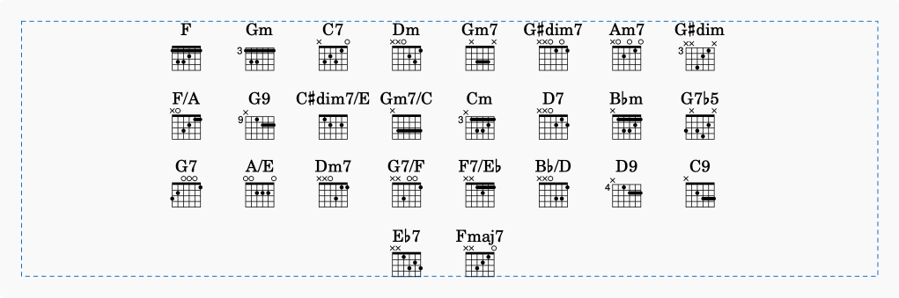
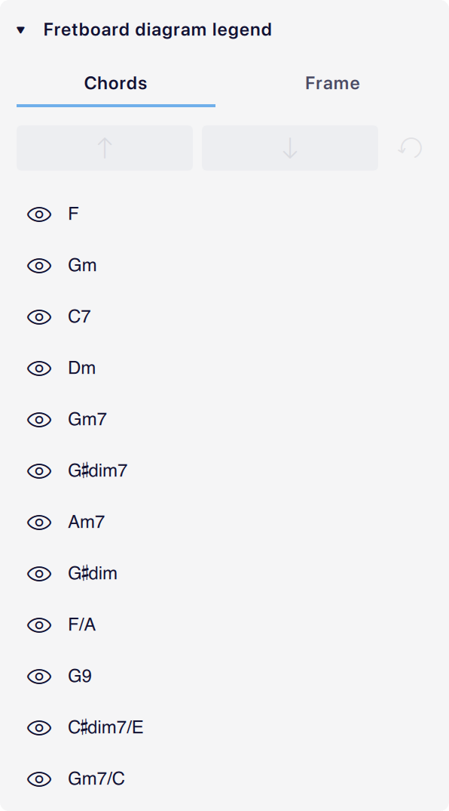

Fretboard diagram legend
Overview
The fretboard diagram legend element is used to present a table of each unique chord symbol in a given score along with corresponding guitar fretboard diagrams.
This is useful for illustrating how to play all the chords in a score in one place without cluttering the notation itself with diagrams.

Adding a fretboard diagram legend
The most common place to insert a fretboard diagram legend is at the start of the score.
To add a fretboard diagram legend:
- Open a score containing chord symbols.
- Add a fretboard diagram legend using one of the following methods:
* In the Layout palette, drag a fretboard diagram legend onto the measure where you'd like to insert the legend (e.g. the first measure).
* Select a note or rest in the measure where you'd like to insert the legend, then either:
- Click the fretboard diagram legend element in the Layout palette.
- Navigate to Add -> Chords and fretboard diagrams -> Fretboard diagram legend or Add -> Frames -> Insert fretboard diagram legend.
- Define a keyboard shortcut for Insert fretboard diagram legend and run it.
The legend will be filled with one diagram for each chord symbol in the score in the order in which they appear. If the same chord symbol is used multiple times in the score, it's only represented once in the legend.
Chord symbols within the score don't need to have fretboard diagrams in order for them to show up in the legend.
Adding a legend at the end of the score
If you want to add a fretboard diagram legend after the last measure in your score, you can either:
- Navigate to Add -> Frames -> Insert at end of score -> Fretboard diagram legend.
- Define a keyboard shortcut for Insert fretboard diagram legend at end of score and run it.
Editing a fretboard diagram legend
Editing individual elements in the legend
Chord symbols and fretboard diagrams are individually selectable within the fretboard diagram legend.
You can change the appearance and some other properties of chords symbols in the legend, but you cannot edit the chords themselves.
You can customize the fretboard diagram that appears beneath each chord by selecting it and editing its properties. See #customizing-a-fretboard-diagram.
Adding different diagrams for the same chord
To include different diagrams for the same named chord, you can use special chord symbol syntax:
- Add a fretboard diagram legend.
- Create two chord symbols in the score, appending
typeand any number of character by which you want to distinguish them (e.g.Atype1andAtype2). - See that in the legend, there are now two different
Achords. - Select the fretboard diagram for the chord(s) you would like to customize, and do so in Properties.
Fretboard diagram legend properties
To select the legend to edit its properties, click any blank area within the legend's dotted boundary line.
Chords tab
Every unique chord symbol in the score is represented in the list of chords in this tab. Use this tab to reorder, hide, or reset chords in the legend.

Reordering chords in the legend
Select a chord in the list in the Chords tab, then use the arrow buttons to move it up or down in the list.
Hiding chords in the legend
Turn the visibility (eye) button off for chords that you want to hide from the legend.
You can also select a chord symbol or fretboard diagram in the legend in the score, and either:
- Press
DeleteorBackspace. - Right-click it and select Hide in the context menu.
Resetting the legend
Use the Reset button to make all chords visible and reset the order to the default.
Frame tab

Many of these properties are the same as those of Vertical frames.
- Scale with staff size: When checked on, the contents of the legend will scale in proportion to the Staff space setting in Page settings -> Scaling.
- Text scale: Adjust the size of all chord symbols in the legend relative to the default.
- Diagram scale: Adjust the size of all fretboard diagrams in the legend relative to the default.
- Column gap: Adjust the horizontal space between each fretboard diagram.
- Row gap: Adjust the vertical space between each row of fretboard diagrams.
- Chords per row: Set the maximum number of chords and diagrams in each row.
- Alignment: Choose whether to align the diagram contents to the left, center, or right of the legend's frame.
- Gap to staff/frames:
- Above: Set the amount of space above the legend to the bottom of the preceding frame or the bottom staff line of the preceding staff.
- Below: Set the amount of space below the legend to the top of the following frame or the top staff line of the following staff.
- Between two adjacent vertical frames or legends, both the first frame's gap below and the second frame's gap above are considered, but only the larger value is applied.
- Clearance for notation: If the preceding/following staff has notation that extends beneath/above the staff, this sets the amount of space above/below the legend to that notation.
- Left/right/top/bottom padding: Adjust space from the legend contents to the edges of its containing frame.
- Left padding is usable when Alignment is set to Align left and Right padding is usable when it's set to Align right.